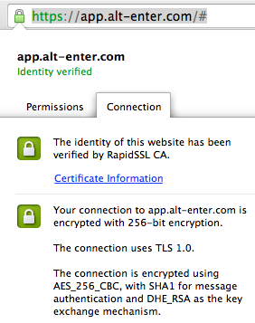

COMMUNITY
|
|
Following is sourced from this blog article: "Although most users don't know it, their web browser plays a key part in determining the strength of the ciphers used between their client and an HTTPS-protected website. Encryption ciphers used in the SSL/TLS (secure sockets layer/transport layer security) negotiations can range from very strong to weak, and involve asymmetric ciphers, symmetric ciphers, key exchange algorithms and hash functions. SSL has been replaced by TLS 1.0 as the current HTTPS standard. It is possible in many browsers to select which SSL and TLS versions are enabled. Any browser you use should support TLS and offer it by default to HTTPS-protected websites. Most browsers still support SSL v.3.0, which is next closest in strength to TLS, and many browsers continue to support SSL v.2.0, but may have it disabled by default. SSL v.1.0 is considered insecure today, although some browsers still use it.
Ciphers Common TLS/SSL symmetric ciphers, in order of strongest to weakest (generally), include Advanced Encryption Standard (AES), Triple DES (3DES), RC4, Data Encryption Standard (DES), and RC2. Every browser today should be offering AES as its default symmetric protocol, followed by 3DES as a backup. The other protocols should only be used for legacy compatibility or offered last. Common TLS/SSL asymmetric ciphers, in order of strongest to weakest (generally), include Elliptical Curve Cryptography (ECC), Rivest Shamir Adleman (RSA), and Diffie Hellman (DH, or DHE for key exchange). ECC is the newly crowned standard for asymmetric ciphers these days, and it's included in the US Government's Federal Processing Information Standards (FIPS) as part of what is called Suite B. A browser must support Suite B to be considered for use by the US government. Browsers should offer ECC as the first asymmetric cipher, followed by RSA or DH.
Hash functions Common cryptographic hash functions include, in order of strongest to weakest (generally), SHA-512, SHA-384, SHA-256, SHA-1, and MD5. MD5 and SHA-1, by far the most popular hashes used, have been shown to have some moderate cryptographic weaknesses, and as such, crypto experts recommend stronger hashes. Of the two, MD5 has been demonstrated to have larger vulnerabilities. Recently, it was shown that digital certificates signed using MD5 hashes cannot be relied upon. Users should avoid cryptography employing MD5 and strive to implement SHA-2 (the family of SHA-256, SHA-384, SHA-512) whenever possible.
Key sizes SSL/TLS symmetric key sizes often range from 40-bit (the old SSL standard) to 512-bit (very strong). Symmetric key sizes of 128-bit to 256-bit are considered secure for most normal security operations, and 256-bit keys are just now becoming the standard, although 128-bit keys are still the most popular. In general, longer key sizes are stronger within a particular cipher. For example, a 256-bit AES key is stronger than a 128-bit AES key. However, you can't always use key size as a strength measurement between cipher families. For example, 384-bit ECC is considered stronger than 1,024-bit Diffie-Hellman. Plus, you can have a horrible cipher with a really long key size and still come out with poor protection. As a matter of fact, users should be wary of newly announced ciphers from questionable sources that claim ultra-long key sizes (such as a million bits or more). A good cipher doesn't need an ultra-long key size. If the cipher algorithm is good, smaller key sizes can be used and the cipher will remain strong.
Browser cipher order When a browser first connects to a SSL/TLS-protected website, the first packet in the SSL handshake includes the browser's preferred cipher order, including all the ciphers the browser currently supports. Both the client and the website must agree upon which ciphers to use before they continue. With any luck, the website will pick the strongest cipher the client supports. By offering the strongest cipher first, the browser increases the likelihood that a web server will pick it, if it supports it. Using stronger cipher orders shows a browser vendor's commitment to cipher strength. Still, it is not unusual to see a browser vendor support very strong ciphers but offer weaker, more popular ciphers first. This could potentially speed up SSL/TLS negotiations.
The browsers compared Browsers in run the gamut in cipher support. Firefox (v.3.12) has the strongest first cipher showing (TLS, ECC, AES, 256-bit key) followed by Opera (v.9.63). Firefox also has strong defaults, and 34 total ciphers to choose from. Opera is impressive because it offers 256-bit symmetric ciphers for the first five suggestions (TLS, RSA, AES being the first). However, Opera doesn't offer ECC support at all, which means that Chrome (v1.0) and Internet Explorer (v.8 beta 2), which do offer ECC, could easily be considered tied for second in cipher support if more than first cipher offered were considered. Both Chrome and Internet Explorer offer TLS, RSA, AES with a 128-bit key first and with a 256-bit key second. In both cases, ECC isn't offered until fifth. Still, Safari runs away with last place with weak first offerings (TLS, RSA, RC4, 128-bit key is offered first and second), frequent MD5 offerings, and no support for ECC, AES, or 256-bit keys."
|
| NOTES |
|
It's the ephemeral aspect of DHE and ECDHE that provides perfect forward secrecy. The idea is that even if someone records traffic and compromises the server to get its private key, they won't be able to decipher that traffic, because they'll be missing the ephemeral DH parameters that won't have been saved. With fixed DH, the private DH parameters are effectively the private key: they would also be compromised in the same way and allow the attacker to decipher past traffic too. (Note that support for fixed DH, non-anonymous cipher suites is quite rare in practice anyway.) The perfect forward secrecy offered by DHE comes at a price: more computation. The ECDHE variants uses elliptic curve cryptography to reduce this computational cost. You may find further details and benchmarks in Vincent Bernat's SSL/TLS & Perfect Forward Secrecy article. |
| Find out your browsers cipher support |
| For a particular connection based on a domain - use the web-browsers tools to see the connection settings, i.e. in Google Chrome, click on the page icon in the address bar and then the Connection tab. |
|  |
| mydigitalstructure's highest cipher level for forward secrecy: DHE-RSA-AES128-GCM-SHA256 |